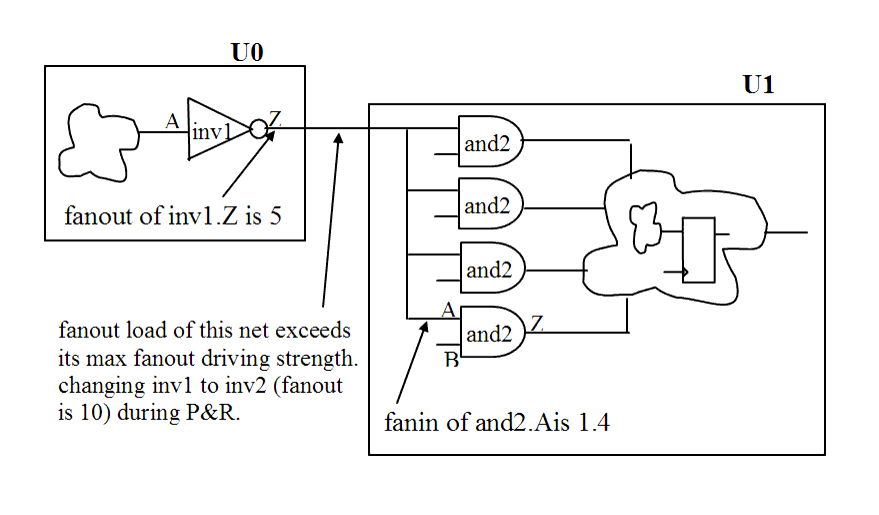

| Description | This rule fires when Leda detects a net whose fanout load exceeds its max fanout driving strength between modules. Removing such nets helps avoid signal faults caused by poor fanout driving strength. This rule is useful early in the design flow to identify highly connected nets that require special attention during synthesis and place-and-route. |
| Policy | DESIGN |
| Ruleset | STRUCTURE |
| Language | VHDL/Verilog |
| Type | Hardware |
| Severity | Error |
This is an example of invalid Verilog code, followed by a circuit diagram that illustrates the problem:
module ntl_str23_top ; ... wire net_01; modu_1 U0(.Dout(net_01), ...); //net_01 is a output signal of U0 modu_2 U1(.Din(net_01), ...); //net_01 is a input signal of U1 ... endmodule module modu_1; output Dout; ... //inv1 - a real cell inverter cell which is provided by Foundry/Vendor inv1 I0(.A(net_01), .Z(Dout)); //for example, the fanout of inv1 is 5 (unit) endmodule module modu_2; intput Din; ... //and2 - a real AND cell which is provided by Foundry/Vendor and2 I0(.A(Din), .B(net_01), .Z(net_11)); //the fanin of and2.(A or B) is 1.4 (unit) and2 I1(.A(Din), .B(net_02), .Z(net_12)); and2 I2(.A(Din), .B(net_03), .Z(net_13)); and2 I3(.A(Din), .B(net_04), .Z(net_14)); // NTL_STR23 fires -- the sum of fanin of (I0~I3).A is // 5.6 (= 1.4 x 4), which is > 5 endmodule